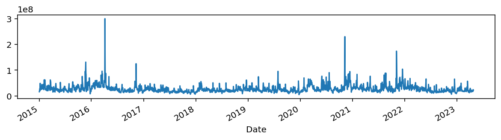
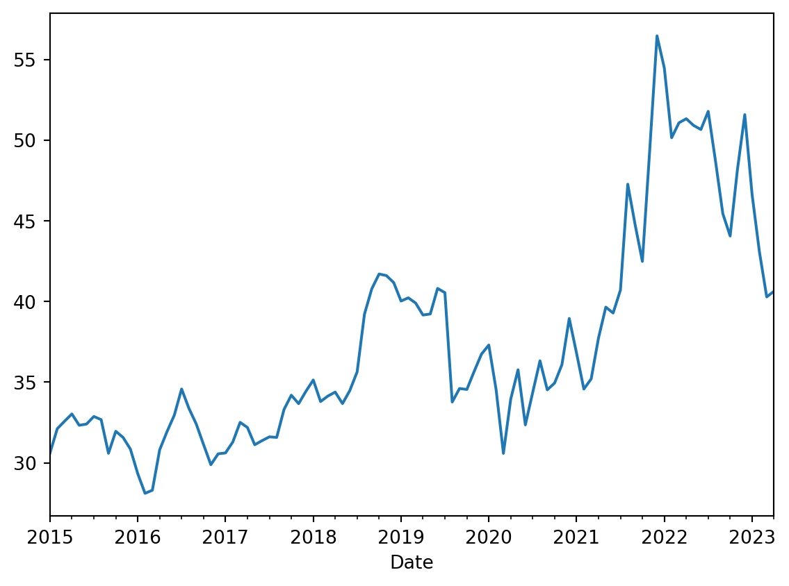
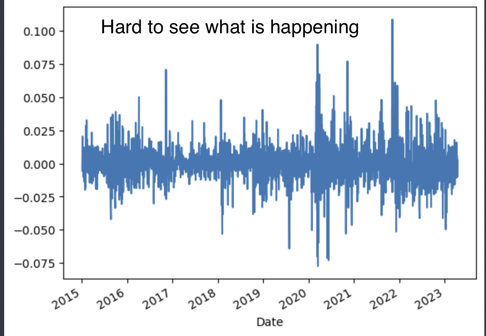
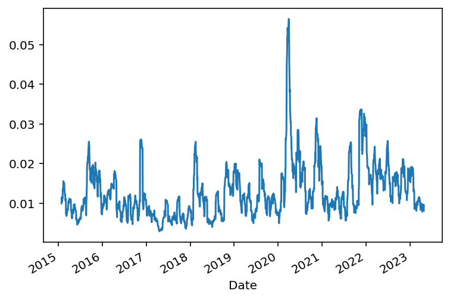

For financial data analysis, it is important to know certain terminologies, their purpose, and how to calculate them.
I’m taking Matt Harrison’s Linkedin course on Python for Finance. Here I note down all the Pandas techniques and concepts explored in the course. As always if you find an error, don’t hesitate to contact me.
Loading data
We use the yfinance library to load our stock data. The stocks listed in NASDAQ stock exchange are identified using a unique symbol aka ticker . I was interested in seeing how Pfizer(PFE) stocks fair in the last 3 years.
import yfinance as yfimport pandas as pdimport numpy as npimport matplotlib.pyplot as plt pharma_df = yf.download('PFE JNJ', start='2015-01-01', end='2023-04-28')pharma_df.head()
1
Displays first 5 rows
[ 0% ][*********************100%***********************] 2 of 2 completed
Adj Close
Close
High
Low
Open
Volume
JNJ
PFE
JNJ
PFE
JNJ
PFE
JNJ
PFE
JNJ
PFE
JNJ
PFE
Date
2015-01-02
83.076210
21.793076
104.519997
29.724857
105.550003
30.151802
104.129997
29.620493
105.050003
29.667933
5753600
16371571
2015-01-05
82.495979
21.674822
103.790001
29.563566
104.730003
29.800758
103.680000
29.421251
104.480003
29.743834
8079300
24786391
2015-01-06
82.090607
21.855684
103.279999
29.810247
104.989998
30.227703
102.940002
29.525618
104.339996
29.667933
7428000
29468681
2015-01-07
83.902840
22.154783
105.559998
30.218216
105.830002
30.237192
103.809998
29.962049
103.910004
30.094877
7931700
20248816
2015-01-08
84.562553
22.606922
106.389999
30.834915
106.489998
30.967743
105.750000
30.569260
106.059998
30.683111
9916000
49169522
Chaining
Matt introduces one of the features in Pandas called chaining. It allows reading the code as a recipe. One can simply go through from top to bottom and understand how the code works. We leverage pipe() pandas function. We can use it call any function.
From the two stocks, PFE and JNJ, we need only PFE. So, we can try to use chaining principle.
Without chaining
def fix_cols(df): cols = df.columns outer = [col[0] for col in cols] df.columns = outerreturn dfpfe_df1 = pharma_df.iloc[:,1::2]pfe_df1 = fix_cols(pfe_df1)pfe_df1
As you can see this makes an easier reading. We use the pipe() to call our fix_cols function. The resulting dataframe has only the outer level column names. Indeed, I agree that as more analysis are added, it gets complicated and harder to understand. Indeed, the intermediate calculation steps are not shown in the final version which makes it difficult to visualise the operation instantaneously.
Plotting
Since Pandas’ plotting functionality is built on top of Matplotlib, we use it easily to plot our data.
Adjusting the plot window size so we can visualise the volume easily

Resampling
Since we have date as our row index, we can leverage .resample() feature of Pandas to convert our PFE raw data into time periods we want to visualise. The .resample() takes in an argument which is appropriate for the index. In our case it is date. So, it can take monthly(M), weekly(W), daily(Y), quarterly(Q) etc. Bi monthly is possible with 2M.
(pfe_df .Close .resample('M') .mean() .plot())
1
Returns resampler object. Looks for an aggregate function.
2
Monthly average
<AxesSubplot:xlabel='Date'>

If we want to aggregate two columns, then we can use .agg() function.
Close column with grouped by max values and Open with first non-null value.
<AxesSubplot:xlabel='Date'>
Candle Stick chart
With stock data, it is easier to visualise its pattern using a candle stick chart. Candle stick plot is not in Pandas. We can write our own plot function using matplotlib.
With the chart, we can determine the patterns such as bearish, bullish etc. We can change .locfor the period we want to see the pattern.
Calculations
In this section we learn certain metrics used on financial data.
Returns
How much percentage of return can be expected? With pandas, we can simply use .pct_change() function and get the values. Plotting them is as simple as shown previously.
(pfe_df .pct_change() .Close .plot())

Histogram can be an option but it doesn’t show negative swing. Somewhat appropriate would be to use bar plot.
This plot shows the negative trends but the X-axis is illegible. We don’t know on which date the closing stock prices changed. This is because Pandas converts/groups whatever on the x-axis into categorical variables. For example, for categorical variable such as elephants, dogs and cats this works but for dates that isn’t correct.
Cumulative returns shows the investment amount gained or lost over time. The formula is given by \[
cumulative\_return = \frac{(current\_price - original\_price)}{(curent\_price)}
\]
Now, with cumulative returns calculation, it would be useful if those values can be assigned to a new column in the dataframe. It is here that a Pandas feature in .assign function is helpful. It helps create new columns. We can couple .assign and lambda together.
Volatility is a statistical measure of the dispertion of the returns for a given market index in this case stocks. In most cases, higher the volatility, the riskier the stock. It is often measured from either standard deviation or variance between returns from that stock. Remember standard deviation is the measure of deviation of the data relative to its mean.
Just like mean(), we can calculate std().
(pfe_df .Close#.mean() .std())
6.69077286484766
The .assign() allows consective chaining methods to use these newly created columns. In the below code block, we can use the pct_change_close created in the first line in to the second line. Then, we can calculate 30 day rolling volatility. Rolling is nothing but a time frame in which the volatility is calculated. We can see that for the first 15 days the volatility is NaN(not a number) and on the 30th day, there is an entry.
Date
2015-01-02 NaN
2015-01-05 NaN
2015-01-06 NaN
2015-01-07 NaN
2015-01-08 NaN
...
2023-04-21 0.008945
2023-04-24 0.009058
2023-04-25 0.009192
2023-04-26 0.009718
2023-04-27 0.009543
Name: pct_change_close, Length: 2094, dtype: float64
#rolling volatility(pfe_df .assign(close_volatility=pfe_df.rolling(30).Close.std(), percent_volatility=pfe_df.Close.pct_change().rolling(30).std()) .iloc[:,-2:] # fetch only the last two columns .plot(subplots=True))
We can also use .resample to calculate 15 day volatility as we have date as index.
# 15 day volatility(pfe_df .assign(pct_change_close=pfe_df.Close.pct_change()) .resample('15D') .std())
Adj Close
Close
High
Low
Open
Volume
cum_rets
pct_change_close
Date
2015-01-02
0.423586
0.577756
0.554235
0.536322
0.565220
8.716662e+06
0.019437
0.009335
2015-01-17
0.408934
0.557768
0.552896
0.473576
0.428281
6.992238e+06
0.018764
0.011556
2015-02-01
0.864667
1.092056
1.124398
1.137237
1.027460
1.347935e+07
0.036739
0.013012
2015-02-16
0.103079
0.139368
0.153115
0.158683
0.142704
5.436585e+06
0.004689
0.006524
2015-03-03
0.232108
0.313819
0.310265
0.285296
0.329080
6.907642e+06
0.010557
0.008226
...
...
...
...
...
...
...
...
...
2023-02-19
0.912909
0.922787
0.942723
1.064260
1.025597
4.710137e+06
0.031044
0.011505
2023-03-06
0.510382
0.515904
0.386680
0.472090
0.610293
1.148802e+07
0.017356
0.011168
2023-03-21
0.414519
0.419005
0.428108
0.305953
0.396622
3.416600e+06
0.014096
0.009084
2023-04-05
0.495242
0.500601
0.483455
0.430794
0.424291
4.807599e+06
0.016841
0.008860
2023-04-20
0.647205
0.654208
0.613951
0.713320
0.629458
2.507162e+06
0.022009
0.010312
203 rows × 8 columns
# 15 day rolling volatility(pfe_df .assign(pct_change_close=pfe_df.Close.pct_change()) .rolling(window=15, min_periods=15) .std())
Adj Close
Close
High
Low
Open
Volume
cum_rets
pct_change_close
Date
2015-01-02
NaN
NaN
NaN
NaN
NaN
NaN
NaN
NaN
2015-01-05
NaN
NaN
NaN
NaN
NaN
NaN
NaN
NaN
2015-01-06
NaN
NaN
NaN
NaN
NaN
NaN
NaN
NaN
2015-01-07
NaN
NaN
NaN
NaN
NaN
NaN
NaN
NaN
2015-01-08
NaN
NaN
NaN
NaN
NaN
NaN
NaN
NaN
...
...
...
...
...
...
...
...
...
2023-04-21
0.591463
0.597864
0.638385
0.562327
0.596404
3.967966e+06
0.020113
0.009691
2023-04-24
0.657297
0.664410
0.695511
0.616351
0.626652
3.915626e+06
0.022352
0.009383
2023-04-25
0.771667
0.780017
0.784388
0.725364
0.709656
4.093416e+06
0.026241
0.008983
2023-04-26
0.957201
0.967559
0.939399
0.930587
0.843585
4.133347e+06
0.032551
0.009559
2023-04-27
1.047608
1.058944
1.047459
1.068349
1.011878
3.287318e+06
0.035625
0.008130
2094 rows × 8 columns
What happens if the assinged new column name is same as the pandas function name and we have to use further for our analysis? We can include that ‘assigned’ column within [](square) braces and use it. In the below example, we can see how pct_change conflicts with pandas and is therefore must be put inside [] to access it.
# 15 day rolling volatility(pfe_df .assign(pct_change=pfe_df.Close.pct_change()) .rolling(window=15, min_periods=15) .std()#.pct_change ["pct_change"] .plot())
<AxesSubplot:xlabel='Date'>

Moving averages or rolling windows
Moving average(MA) of a stock is calculated to help smooth out the price data by creating a constantly updated average price. It helps to mitigate the impacts of random, short-term fluctuations on the prices of the stock over a time period. There are two types of moving averages - simple which is just the arithmetic mean of the given prices over a specified number of days and exponential which is the weighted average that gives significance to the recent prices than old ones, making it an indicator that is more responsive to new infotmation.
MA is used to identify the tread direction of a stock or to determine its support and resistance level as it depends on the past prices. The longer the period for the MA, the greater the lag. A 200-day MA has much greater lag than 20-day MA. The gold standard used by investers are 50-day and 200-day MAs.
Shorter MA for short-term investment and longer MA for long-term. A rising MA means upward trend and declining means downward trend.
What is a Golden Cross?
A golden cross is a chart pattern in which a short-term moving average crosses above a long-term moving average. The golden cross is a bullish breakout pattern formed from a crossover involving a security’s short-term moving average such as the 15-day moving average, breaking above its long-term moving average, such as the 50-day moving average. As long-term indicators carry more weight, the golden cross indicates a bull market on the horizon and is reinforced by high trading volumes.
Lag
These lags can be calculated in Pandas using shift function. shift(1) means shift index one place down. shift(2) means two places down. For example,
the Close value in the first row will be on the second row for shift(1) and two rows down for shift(2).
Now for simple 3-day moving average, we need to average Close, s1, and s2. We can do it manually using a lambda and use the rolling pandas with window=3 specified.
Technical analysis studies the price and volumes of the investments. Studying the trends on prices and volumes give analyst to evaluate and identify trading opportunities.
Technical analysis tools are used to scrutinize the ways supply and demand for a security will affect changes in price, volume, and implied volatility. Past prices are used to determine future prices.
OBV- On-balance Volume
OBV is one such used for technical analysis. It is a momentum indicator that uses volume to predict changes in stock price.
What Does On-Balance Volume Tell You?
The actual value of the OBV is unimportant; concentrate on its direction. (source: fidelity)
When both price and OBV are making higher peaks and higher troughs, the upward trend is likely to continue.
When both price and OBV are making lower peaks and lower troughs, the downward trend is likely to continue.
During a trading range, if the OBV is rising, accumulation may be taking place—a warning of an upward breakout.
During a trading range, if the OBV is falling, distribution may be taking place—a warning of a downward breakout.
When price continues to make higher peaks and OBV fails to make higher peaks, the upward trend is likely to stall or fail. This is called a negative divergence.
When price continues to make lower troughs and OBV fails to make lower troughs, the downward trend is likely to stall or fail. This is called a positive divergence.
OBV calculation
If today’s close is greater than yesterday’s close then: OBV = Yesterday’s OBV + Today’s Volume
If today’s close is less than yesterday’s close then: OBV = Yesterday’s OBV – Today’s Volume
If today’s close is equal to yesterday’s close then: OBV = Yesterday’s OBV
\[
OBV = OBV_{prev} + \begin{cases}
volume, \text{ if close > close}_{prev} \\
0, \text{ if close = close}_{prev}\\
-volume, \text{ if close < close}_{prev}
\end{cases}
\]
It takes a while to complete. That is too long. Another approach would be to use numpy’s where condition. Inserting the conditions needs some thinking and isn’t obvious as seeing the mathematical formula. So we avoid np.where even though it is faster than naive python approach.
Preferred choice to calculate OBV - np.select
The syntax of np.select is easy to understand - we specify the conditions list, their choices and a default value if the conditions aren’t satisfied.
A/D is an evolution of OBV to find the relationship between the price and volume flow of the stock. OBV, from its formula totally relies on the closing value and the volume is either added or substracted giving total bias either to the buyers or sellers. This is not realistic. So A/D brings proporation to the context. In other words it brings a multipler that ranges from -1 to +1. Realistically the value is between this range and therefore providing realistic volume flow.
Formula for A/D is given by \[
A\\/D = A\\/D_{prev} + (\text{money flow multiplier} * \text{current volume})
\] where Money flow multiplier and Current Volume is given by